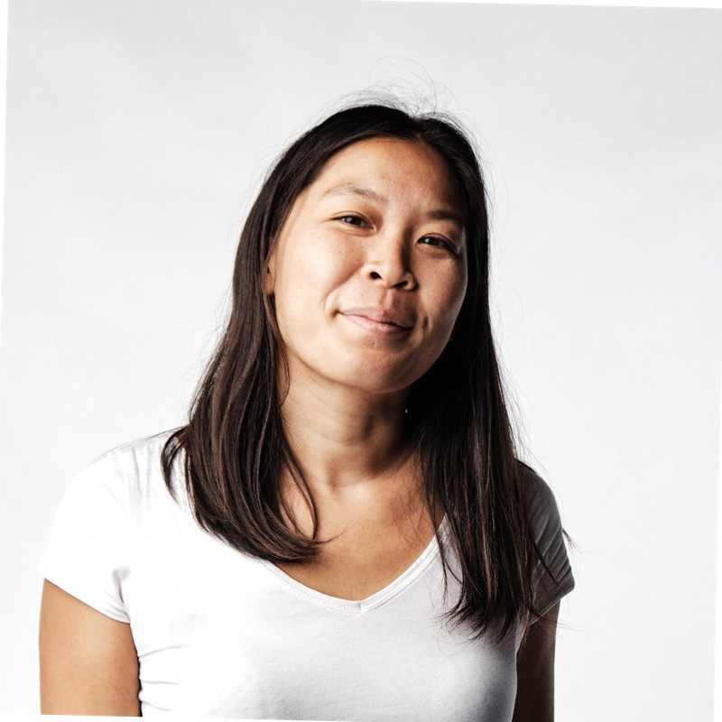

SAP · PMO · IT Transformation — 10+ years leading SAP implementations, PMO governance, and IT/data-driven transformation projects across France, Germany, and the UK. PMP certified.
Download CV →SAP · PMO · Transformación TI — Más de 10 años liderando implementaciones SAP, gobernanza PMO y proyectos de transformación TI/datos en Francia, Alemania e Inglaterra. Certificación PMP.
Descargar CV →
I lead complex, cross-border technology projects end-to-end — from scope definition through go-live and hypercare. My background spans three connected areas.
Lidero proyectos tecnológicos complejos y multinacionales de principio a fin — desde la definición de alcance hasta el go-live y el hypercare. Mi trayectoria abarca tres áreas conectadas.
ECC implementation, BW cloud migration, cutover leadership.
Implementación ECC, migración BW a la nube, liderazgo de cutover.
Governance models, KPI frameworks, vendor & CoE coordination.
Modelos de gobernanza, frameworks de KPIs, coordinación de proveedores y CoE.
Data-driven delivery — AI tooling, remote/distributed teams.
Entrega orientada a datos — herramientas de IA, equipos remotos/distribuidos.
Implementation leadership, cloud migration, and release management across SAP ECC environments in multinational settings.
Liderazgo de implementación, migración a la nube y gestión de releases en entornos SAP ECC multinacionales.
Migrated two separate SAP BW platforms — one linked to ECC, one to FMS — from in-house servers to GCP, then led a second project merging both into a single consolidated BW environment.
Migré dos plataformas SAP BW separadas — una vinculada a ECC, otra a FMS — desde servidores in-house hacia GCP, y luego lideré un segundo proyecto para fusionarlas en un entorno BW consolidado único.
Also led change management for the migration across 1,000+ users — designing a super-user network, and building query and KPI dictionaries to support adoption on the new consolidated platform.
También lideré la gestión del cambio de la migración para más de 1.000 usuarios — diseñando una red de super usuarios y construyendo diccionarios de queries y KPIs para apoyar la adopción de la plataforma consolidada.
Led delivery of 2 SAP releases, coordinating 200+ people through scope, testing, and hypercare.
Lideré la entrega de 2 releases SAP, coordinando a más de 200 personas desde el alcance hasta el hypercare.
Releases included migration to the cloud (on-premise → GCP), functional releases across ECC, FMS, EWM, APO, APR, F&R, and BW, plus technical upgrades.
Los releases incluyeron la migración a la nube (on-premise → GCP), releases funcionales en ECC, FMS, EWM, APO, APR, F&R y BW, además de upgrades técnicos.
Led SAP ECC deployment across England, Poland, and integration of a newly acquired Scottish entity — reporting directly to the CFO. Managed 2 junior PMs + 4 external consultants across the full project lifecycle.
Lideré el despliegue de SAP ECC en Inglaterra y Polonia, e integré una entidad escocesa recién adquirida — reportando directamente al CFO. Gestioné 2 PMs junior + 4 consultores externos durante todo el ciclo de vida del proyecto.
Managed integrator relationship, led user training and documentation, and ran FIT/GAP analysis between HQ and local requirements. Modules: SD, MM, FI-CO, PP, CS.
Gestioné la relación con el integrador, lideré la capacitación de usuarios y la redacción de documentación, y realicé análisis FIT/GAP entre requerimientos de casa matriz y locales. Módulos: SD, MM, FI-CO, PP, CS.
Building governance from scratch — portfolio structures, KPI frameworks, and vendor coordination at scale.
Construcción de gobernanza desde cero — estructuras de portafolio, frameworks de KPIs y coordinación de proveedores a gran escala.
Built a portfolio governance model, reporting structure, and KPI framework from the ground up — not inherited — for an organization of 600+ people and a €2M+ budget.
Construí desde cero un modelo de gobernanza de portafolio, estructura de reporte y framework de KPIs — no heredado — para una organización de más de 600 personas y un presupuesto de +€2M.
Built KPIs and ensured data collection for reporting; managed budget and prioritization of initiatives across business units; built change management (training, sensitization, ways of working).
Construí KPIs y aseguré la recolección de datos para reportería; gestioné el presupuesto y la priorización de iniciativas entre unidades de negocio; construí la gestión del cambio (capacitación, sensibilización, formas de trabajo).
Coordinated the Center of Excellence supporting an S/4HANA transition, growing the team from 15 to 50 people; managed a multi-million euro RFP through to vendor onboarding.
Coordiné el Center of Excellence de apoyo a la transición a S/4HANA, con crecimiento del equipo de 15 a 50 personas; gestioné un RFP multimillonario en euros hasta el onboarding del proveedor.
CoE covered release and change management plus level 1/2/3 support, for S/4HANA processes including Procure to Pay, Order to Cash, and Finance. Also designed and documented internal processes (Signavio).
El CoE abarcó gestión de releases y cambios, más soporte de nivel 1/2/3, para procesos S/4HANA incluyendo Procure to Pay, Order to Cash y Finanzas. También diseñé y documenté procesos internos (Signavio).
Data-driven delivery, from AI-assisted social-impact tooling to remote-distributed reporting projects.
Entrega orientada a datos, desde herramientas de impacto social con IA hasta proyectos de reportería remota-distribuida.
Leading a volunteer PM role for an AI-driven tool supporting evidence collection in cyberbullying cases — data pipeline coordination, cross-functional volunteer team management.
Lidero un rol de PM voluntario para una herramienta con IA que apoya la recopilación de evidencia en casos de cyberbullying — coordinación de pipeline de datos, gestión de equipo voluntario multidisciplinario.
Recruited and onboarded volunteers, managed progress status and communication, and maintained the relationship with the sponsoring association.
Recluté e incorporé voluntarios, gestioné el estado de avance y la comunicación, y mantuve la relación con la asociación patrocinadora.
Led digital and data-reporting initiatives remotely, translating business requirements into structured data/reporting deliverables.
Lideré iniciativas digitales y de reportería de datos de forma remota, traduciendo requerimientos de negocio en entregables estructurados de datos/reportería.
Acted as the bridge between the client and the SaaS product editor/provider (Metrio by Nasdaq, Board) — data flow design and ad hoc analysis, plus process and user guide documentation.
Actué como puente entre el cliente y el proveedor/editor del producto SaaS (Metrio de Nasdaq, Board) — diseño de flujo de datos y análisis ad hoc, además de documentación de procesos y guías de usuario.
Every cutover builds in the fallback before go-live — not because I expect it to fail, but because the team that already knows its contingency isn't the team that panics during hypercare.
Cada cutover incluye el plan de contingencia antes del go-live — no porque espere que falle, sino porque el equipo que ya conoce su plan de respaldo no es el que entra en pánico durante el hypercare.
I'll tell you exactly what I owned versus what I coordinated — and I still design for the whole system, not just my slice of it.
Te diré exactamente qué lideré versus qué coordiné — y aun así diseño pensando en todo el sistema, no solo en mi parte.
I ask more questions than most PMs are comfortable with, because adoption breaks on the detail nobody thought to mention.
Hago más preguntas de las que la mayoría de los PMs consideran cómodas, porque la adopción se rompe en el detalle que nadie mencionó.
A commitment isn't done when it's promised — it's done when it's tracked to closure. Same instinct behind every KPI framework I've built, including the numbers on this page.
Un compromiso no está cumplido cuando se promete — está cumplido cuando se rastrea hasta el cierre. El mismo instinto detrás de cada framework de KPIs que he construido, incluyendo las cifras de esta página.
Based in Santiago, Chile. Open to permanent, project-based and fixed-term SAP/PMO/PM engagements.
Con base en Santiago, Chile. Disponible para proyectos y contratos de plazo fijo o indefinido en SAP/PMO/PM.